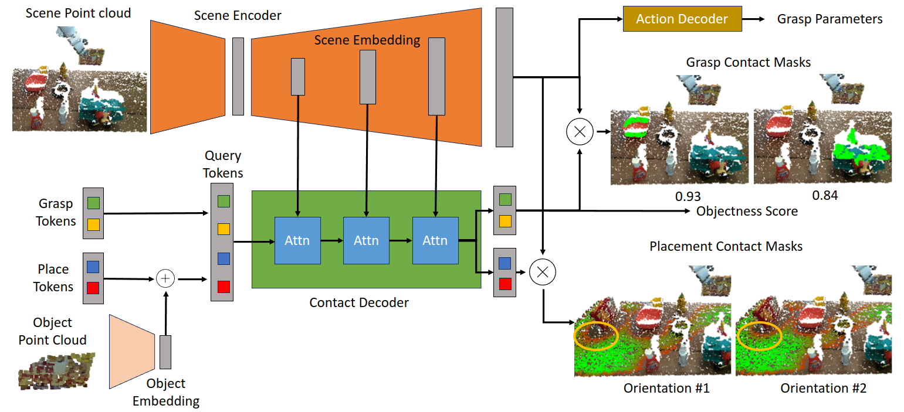

Real-world Pick-and-place
M2T2 achieves zero-shot Sim2Real transfer for picking and placing unknown objects, outperforming a baseline system consisting of state-of-the-art task-specific methods by 19% in success rate.
Network Architecture
M2T2 uses cross-attention between learned embeddings and multi-scale point cloud features to produce per-point contact masks, indicating where to make contact for picking and placing actions. Our general pick-and-place network produces G object-specific grasping masks, 1 for each graspable object in the scene, and P orientation-specific placement masks, 1 for each discretized planar rotation. 6-DoF gripper poses are then reconstructed using the contact masks and the point cloud.

M2T2 can also take other conditional inputs (e.g. language goal) to predict task-specific grasps/placements. Below is the architecture for M2T2 trained on RLBench, which is conditioned on language tokens embedded by a pretrained CLIP model.
Comparison Against Single-task Models
We have trained M2T2 to only perform a single task: grasping or placing. Although these task-specialized models outperform the baselines, they are still worse than our multi-task model. This shows that it is important to formulate both picking and placing under the same framework.